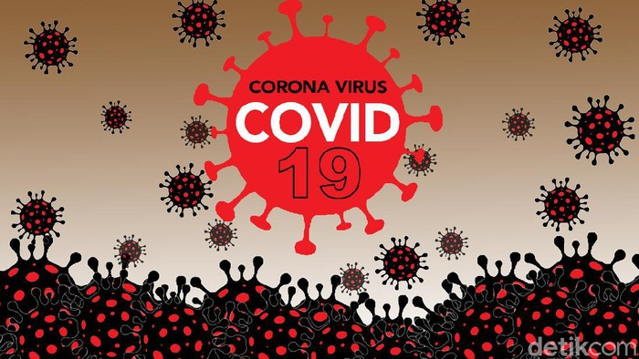
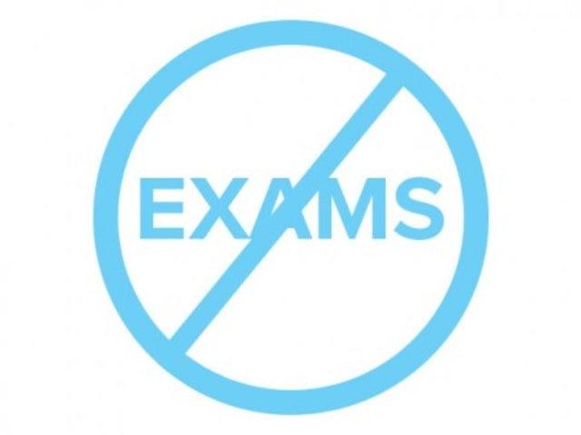

Tempat Tinggal : Perumahan Ciomas Hill Cluster Pangrango Blok A7/15
Motto Hidup : Menjadi yang terbaik dari yang terbaik
24/08/2020
Apa itu Corona?
Virus Corona atau severe acute respiratory syndrome coronavirus 2 (SARS-CoV-2) adalah virus yang menyerang sistem pernapasan. Penyakit karena infeksi virus ini disebut COVID-19. Virus Corona bisa menyebabkan gangguan ringan pada sistem pernapasan, infeksi paru-paru yang berat, hingga kematian.
Severe acute respiratory syndrome coronavirus 2 (SARS-CoV-2) yang lebih dikenal dengan nama virus Corona adalah jenis baru dari coronavirus yang menular ke manusia. Virus ini bisa menyerang siapa saja, seperti lansia (golongan usia lanjut), orang dewasa, anak-anak, dan bayi, termasuk ibu hamil dan ibu menyusui.

24/08/2020
Kenapa kita harus bangga menjadi orang Indonesia?
1. Negara Kepulauan Terbesar di Dunia
Tahukah kamu bahwa Indonesia adalah negara kepulauan terbesar di dunia. Kamu bisa bayangkan, terdapat lebih dari 17 ribu pulau terbentang dari Sabang sampai Merauke. Dianugerahi dengan ratusan pantai yang luar biasa indah, gunung-gunung yang gagah menjulang tinggi, ratusan air terjun yang mempesona, dan ribuan flora dan fauna yang tidak akan habis kamu jelajahi.
Sebagai Negara kepulauan, Indonesia juga dikarunia dengan kekayaan laut berupa berbagai ragam ikan. Hal ini membuat kamu bisa mengkonsumsi ikan setiap hari, yang merupakan barang mahal bagi mereka yang tinggal di negara yang tidak memiliki lautan.
2. Negara Berpenduduk Muslim Terbesar di Dunia
Tahukah kamu negara mana yang memiliki penduduk muslim terbesar? Bukan Arab Saudi dan bukan juga Iran maupun Mesir. Iya, Indonesia merupakan negara dengan penduduk muslim terbesar di dunia. Dengan total populasi sekitar 260 juta, sekitar 85 persen atau 222 juta jiwa adalah pemeluk Islam. Tidak mengherankan kenapa Indonesia menjadi salah satu negara berpengaruh di kancah politik global sebagai negara yang merepresentasikan Islam.
3. Negara Demokrasi Terbesar Ke-3 di Dunia
Indonesia adalah negara demokrasi terbesar di dunia setelah India dan AS. Banyak kalangan sebelumnya meragukan bahwa demokrasi tidak akan bisa berdampingan dengan Islam. Namun Indonesia dengan populasi muslim terbesar di dunia telah membuktikan bahwa penilaian tersebut keliru.
26/8/2020
Kenapa Sistem Pendidikan Finlandia Terbaik di Dunia?
1. Pemerintah Tidak Campur Tangan
Walaupun sudah berganti pemerintahan berkali-kali, sistem pendidikan di sini tidak terpengaruh secara signifikan. Ini karena sistem pendidikan di Finlandia tidak dicampuri sama sekali oleh pihak pemerintah.
Pemerintah Finlandia menganggap para gurulah yang tahu dengan jelas visi dan misi sistem pendidikan di negaranya. Sebab mereka yang turun tangan langsung. Maka, pemerintah tidak melakukan intervensi apapun. Berbeda banget ya dengan sistem pendidikan di Indonesia yang selalu diintervensi oleh pemerintah.
2. Tidak Ada Ulangan Harian atau Ujian Nasional
Di Finlandia sama sekali tidak ada ulangan harian atau ujian nasional. Negara Finlandia justru percaya kalau ulangan dan ujian ini akan menghancurkan tujuan belajar siswa. Siswa nantinya malah semata-mata hanya ingin lolos ujian dan menghafal, bukan mengerti arti sesungguhnya dari pelajaran yang diberikan.
Menurut orang-orang Finlandia, ulangan dan ujian yang berlebihan ini justru membuat siswa jadi kehilangan minat dan bakat. Anak-anak di sana tidak hanya diasah otaknya saja, tetapi juga kemampuan bertahan untuk menjadi pribadi yang independen dan selalu ingin tahu.

3. Guru-guru yang Berkualitas
Para guru ini bertanggung jawab penuh atas kurikulum dan program yang berjalan di setiap sekolah. Mereka hanya menghabiskan empat jam sehari di kelas untuk mengajar. Selain dipilih lulusan terbaik, guru-guru ini juga diberi waktu dua jam per minggu untuk pengembangan profesional.
Sistem pendidikan di Finlandia juga membagi satu guru saja untuk tiap 12 siswa. Supaya, guru bisa memerhatikan siswa secara khusus. Untuk kelas sainsnya, tiap kelas hanya dibatasi sekitar 14-16 orang agar praktek laboratoriumnya berjalan lebih intens.
4. Tidak Ada Sistem Ranking
Di Finlandia, para guru ingin setiap anak menganggap bahwa dirinya pintar. Mereka berasumsi bahwa semua murid bisa meraih rangking 1. Tidak perlu ada perbedaan jenjang karena perbedaan itu justru malah akan membuat para siswa jadi merasa terdiskriminasi.
Para siswa juga tidak akan diminta membandingkan nilainya dengan teman-temannya. Guru di sana akan mengajak siswa membandingkan hasil kerjanya yang baru dengan hasil kerjanya yang lama. Proses ini dilakukan untuk memperlihatkan pada siswa seberapa besar progres belajarnya.